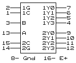

ИД5 = (156) - сдвоенный демультиплексор 2 в 4 с открытым коллектором

ИД4 = (155) - сдвоенный демультиплексор 2 в 4. Условное графическое обозначение
Назначение выводов
A,B
входы адресные
Y
выходы
G
стробы
C
входы данных
ИД4 и ИД5 представляют из себя сдвоенные демультиплексоры. У одной из половин микросхемы вход данных инвертирован,благодаря чему при объединении входов "C" и "G" можно получить демультиплексор 3 в 8.